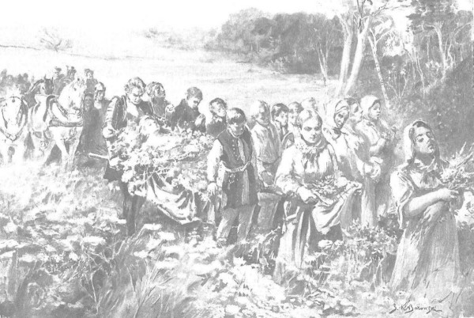
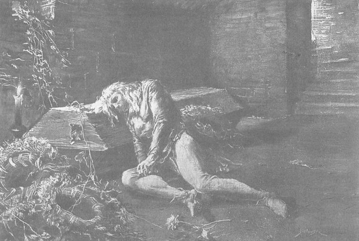

Cuối cùng họ cũng đưa được thi thể nàng thiếu nữ về đến vùng rừng của trang Spychow, nơi biên giới có những gia nhân vũ trang của ông Jurand canh giữ ngày đêm. Một người trong số đó chạy vội về trang báo tin cho cụ Tolima và cha Kaleb, những người khác dẫn đầu đám rước, trên con đường thoạt tiên quanh co và lồi lõm, tiếp sau là một con đường rộng rãi dẫn đến bìa rừng, nơi bắt đầu một vùng lầy lội và ẩm ướt trải rộng, nơi có đàn thủy cầm vùng đầm lầy đông đúc, rồi đến lâu đài Spychow nằm trên một ngọn đồi khô ráo. Có thể thấy ngay là tin tức đau thương đã về tới Spychow, vì chỉ vừa ra khỏi bóng khu rừng đến với bầu trời sáng sủa, thì tai họ đã nghe vọng những tiếng chuông từ nhà nguyện của điền trang. Lát sau, họ nhìn thấy một toán người đông đảo, có cả đàn ông và đàn bà, từ xa tiến lại. Khi hai đoàn còn cách nhau hai, ba tầm tên bắn, đã có thể nhận diện được mọi người. Dẫn đầu là đích thân ông Jurand, được cụ Tolima đưa đi, tay ông khua khua chiếc gậy chống. Rất dễ nhận ra ông bởi cái tầm vóc cao lớn khác người, hai lỗ hổng màu đỏ ở vị trí của đôi mắt và mái tóc trắng xõa xuống tận vai. Bên cạnh ông, người mang theo cây thánh giá trong bộ áo choàng trắng là linh mục Kaleb. Đằng sau họ là người mang cờ hiệu với gia huy của ông Jurand và những chiến binh có vũ trang của Spychow, tiếp theo là những người đàn bà đã có chồng mang khăn choàng đầu và những thanh nữ đầu trần tóc màu sáng. Cuối đoàn người là một cỗ xe để đặt thi thể thiếu nữ.
Trông thấy ông Jurand, Zbyszko ra lệnh hạ cái cáng mà chính chàng khiêng phía đầu xuống đất, rồi chạy lại phía ông, kêu lên bằng giọng khủng khiếp vì nỗi đau buồn và tuyệt vọng vô bờ bến:
- Con đi tìm nàng cho cha, tìm cho bằng được, con đã cướp lại được nàng, nhưng nàng lại muốn đến với Đức Chúa hơn là về Spychow!

Họ đưa thi thể nàng thiếu nữ về đến vùng rừng của Trang Spychow
Và nỗi buồn khiến chàng gục hẳn, ngã vào ngực ông Jurand, ôm choàng lấy cổ ông mà rên lên:
- Ôi Chúa ơi! Ôi Chúa ơi…
Nhìn cảnh tượng ấy, với trái tim sôi sục, những thuộc hạ có vũ trang của điền trang Spychow bắt đầu đập giáo vào những tấm lá chắn, bởi họ không biết làm thế nào khác để bày tỏ nỗi đau và khao khát trả thù. Những người phụ nữ thì thở than và kêu khóc, đưa tạp dề lên lau mắt, hoặc phủ lên đầu, khóc thành tiếng:
- Ôi! Số phận! Số phận! Cô thì cười còn chúng tôi thì khóc. Cái chết đã vơ lưỡi hái vào cô, thần chết đã cướp cô đi rồi, than ôi!
Một số người ngửa đầu ra phía sau, mắt nhắm nghiền, hét lên:
- Chẳng lẽ ở đây tệ lắm sao, hỡi đóa hoa tươi thắm, ở với chúng tôi tệ lắm sao? Để lại cha già trong tang tóc, còn cô bỏ đi dạo chơi trong ngôi nhà thiên giới, than ôi!
Sau rốt, có những người nhắc nhủ cho người vừa quá cố xót thương cho cha già và người chồng cô đơn, cũng như những dòng lệ của họ. Những lời than khóc và buồn thương này nửa phần giống như bài ca, bởi những cư dân chốn đây không biết thổ lộ nỗi đau của mình theo cách nào khác.
Buông mình khỏi vòng tay Zbyszko, ông Jurand chỉ chiếc gậy ra trước mặt, ra dấu rằng ông muốn tới chỗ Danusia. Cụ Tolima và Zbyszko liền đỡ lấy hai cánh tay dẫn ông đến chỗ cái cáng, ông quỳ xuống cạnh thi thể, đưa bàn tay chạm vào, vuốt từ trán xuống đến chỗ hai tay bắt tréo của người quá cố, rồi cúi đầu vài lần, như muốn nói rằng đó chính là Danusia của ông, không phải ai khác, và rằng ông đã nhận ra đứa con ruột thịt. Ông vòng một cánh tay ôm lấy nàng, còn tay kia ông giơ lên cao, dẫu bàn tay đã bị chặt lìa, và những người có mặt đều hiểu rằng cách oán thán không lời này với Chúa còn hùng hồn hơn bất cứ một lời đau buồn nào khác. Sau khoảnh khắc bùng nổ, khuôn mặt Zbyszko như hoàn toàn tê liệt, chàng cứ quỳ mãi phía bên kia cái cáng, lặng im như một tượng đá, chung quanh yên lặng như tờ, đến nỗi nghe thấy tiếng châu chấu bay ngoài đồng và tiếng vù vù của một con ruồi bay qua. Cuối cùng, cha Kaleb vẩy nước thánh lên người Danusia, Zbyszko, ông Jurand, và bắt đầu đọc kinh “Requiem aeternam” [222] , Sau khi dứt bài kinh, cha còn cầu nguyện thành tiếng hồi lâu, những người có mặt ngỡ như nghe thấy giọng của đấng tiên tri đang cầu xin để nỗi khổ đau này của một đứa trẻ vô tội là giọt nước làm tràn li của cái ác, để mau đến ngày phán xét và trừng phạt, với sự căm phẫn và kinh hãi.
Rồi họ lên đường về Spychow, nhưng họ không đặt Danusia lên xe, mà mang nàng trên chiếc cáng phủ đầy hoa. Chuông vẫn đổ dồn như mời gọi họ về, và họ vừa đi vừa hát dưới ráng hoàng hôn vàng rực trải rộng mênh mang, như thể quả thực cô gái vừa qua đời đang dẫn họ tới với vầng sáng trong trẻo vĩnh hằng. Chiều đã buông, đàn gia súc từ đồng ruộng trở về khi họ về đến điền trang. Nhà nguyện nơi đặt xác cô gái sáng rực ánh đuốc và đèn nến. Theo hiệu lệnh của cha Kaleb, bảy cô gái đồng trinh thay nhau đọc kinh cầu nguyện bên thi hài cho đến bình minh. Cho đến tận lúc bình minh Zbyszko cũng không rời khỏi Danusia, và sau buổi đọc kinh nguyện sáng, tự tay chàng đặt nàng vào áo quan mà những người thợ thủ công khéo tay đã làm suốt đêm qua từ một thân cây sồi, trên nắp ở phần đầu nàng có mặt kính bằng hổ phách màu vàng.

Cho đến tận lúc bình minh Zbyszko cũng không rời khỏi Danusia, và tự tay chàng đặt nàng vào áo quan